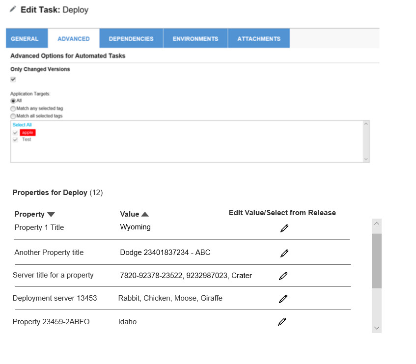
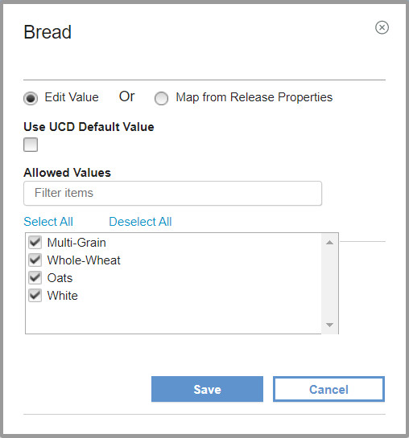

This article was originaly published in 2020.03.25
6.2.3.1
This release of IBM UrbanCode Release is a maintenance release and includes various bug fixes and enhancements. This release is recommended for all customers.
New Features
Enhancements to UrbanCode Deploy automated task
Viewing process properties has been enhanced to include the value, default, and property type in a table format. There is an action column identifying the action that you can perform on the property. All properties can be edited to change the value. Properties that have been added in UrbanCode Release can be edited and deleted.
Adding properties is done using the new Add Property dialog box. When adding a property you can type in the value or map the value to a release property.


Display task tags
Task tags can now be viewed from a deployment plan details. Above the list of task details for a deployment plan, there is a
Show Tags
toggle switch to view a list of tags.

New Calendar format
A grid view has been added. View calendar in grid format by day, 4 days, week and month.
You can now filter by deployments, release target date, team, environment, and release.

Copy Task
The new Copy Task reduces the amount of time it takes to create tasks with the same attributes or partially the same attributes. This feature available on the Deployment Execution and Deployment Plan pages.
Software upgrades
The UrbanCode Release server runs on Apache Tomcat. The integrated Apache Tomcat level has been upgraded to version 8.5.51.
The supported DB2 database has been upgraded to version 11.5.
Release Summary
-
Calendar can be viewed in a grid format
-
Make a copy of certain existing tasks
-
View deployment task tags
-
Bug fixes
Release Notes
For information on documentation and support resources, software and hardware requirements and installation steps, click the Getting Started tab.
Fixes in this Release
|
PH21859
|
UCR SERVER FAILS TO START WHEN THE INSTALLATION PATH CONTAINING
|
|
PH22721
|
AFTER UPGRADE TO 6.2.3.0 UCR FAILS ON APPLYING 6.2.1.3 CHANGE
REMOVE TASKS REFERENCING DELETED BUILT-IN INTEGRATION
|
|
PH22729
|
UCR 6.2.3 UPGRADE FAILED ATTEMPT TO COPY USING NIO CHANNELS FAILED DUE TO (ACCESS IS DENIED)'. FALLING BACK TO STREAM
|
Getting Started
Plan & Prepare
For supported platforms and requirements, see the reports that can be dynamically generated using the
Software Product Compatibility Reports (SPCR)
tool.
Note:
Some supported plug-ins have system requirements that vary from the core product. Information on system requirements for individual plug-ins is available on the download page for that plug-in.
To get started quickly to try the software, IBM UrbanCode Release is shipped with an Apache Derby database. Apache Derby deployments are not supported for production environments. As you plan your production topology, review the
installation guide
.
Learn
To learn more about new enhancements in this release, click What’s New..
To learn more about IBM UrbanCode Release, see the
documentation
.
For help installing or using IBM UrbanCode Release, post your questions in the
forums
or contact
support
.
To suggest an enhancement to the product, visit the
RFE Community
.
Get support
For information from support, including FAQs, visit the
IBM Support portal.
You can configure the support portal to view information about specific products.